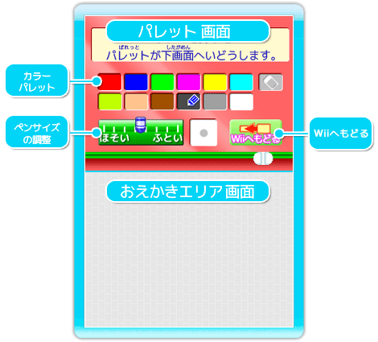

8 |
おえかき画面（ニンテンドーDS） |
 |
ニンテンドーDSを使って絵を描いてみましょう。 Wiiのおえかき画面で、「ニンテンドーDS」のボタンをポインターで選んで、Ａボタンで決定します。  タッチペンを使用して、絵を描くことができるエリアです。
DS本体のボタンのどれか（電源ボタン以外）を押している間パレットが下画面へ移動します。
タッチペンで使いたい色を選んでタッチして決定します。
タッチペンでおえかきエリアで絵を描くペンの太さを調整することができます。
ニンテンドーDSでのおえかきを終了して、Wiiリモコンでの操作へもどります。
Wii本体とDS本体を接続するときに使用します。
ニンテンドーDSをコントローラとして使用する場合の使用方法について、説明します。
● ニンテンドーDS本体（DSi、DS Lite、DSi LL含む） ・・・・・1台
● ニンテンドーDS専用ソフト「かく！うごく！つかまえる！せんせいWii」ソフト
・・・・・1本
● 通信中のニンテンドーDSの画面に表示されるアイコン ● ニンテンドーDSi（DSi LL含む）を使用する場合は、DSiの本体設定の無線通信をONにしてください。詳しくは、ニンテンドーDSi本体取扱説明書 操作編、またはニンテンドーDSi LL本体取扱説明書の「本体設定」をご覧ください。 ● ニンテンドーDSと快適な通信を行うために、次のことにご注意ください。 ・ Wii本体とニンテンドーDSの距離は10m以内、もしくは受信強度アイコンのアンテナの数が2本以上となる距離としてください。 ・ Wii本体とニンテンドーDSの間に、人や物など、障害物が入らないようにしてください。 ・ 電波干渉の原因となる機器（電子レンジ・コードレス機器など）によって、通信に支障が出る場合は、Wii本体をその場所から離れた場所に設置するか、電波干渉の原因となる機器の使用を中止してください。
|
|||||||||||||||||||||||||||||||||||||||||||||||||||||||||||||||||||
 |
 |
 |